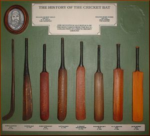

Cricket is a popular bat-and-ball game played between two teams of eleven players each on a circular field. It originated in England and is widely played in countries like Australia, India, Pakistan, and South Africa. The objective of the game is to score more runs than the opposing team. Cricket has a massive global following and is considered one of the most popular sports in the world.
In 1597 (Old Style – 1598 New Style) a court case in England concerning an ownership dispute over a plot of common land in Guildford, Surrey, mentions the game of creckett. A 59-year-old coroner, John Derrick, testified that he and his school friends had played creckett on the site fifty years earlier when they attended the Free School. Derrick's account proves beyond reasonable doubt that the game was being played in Surrey circa 1550, and is the earliest universally accepted reference to the game. The first reference to cricket being played as an adult sport was in 1611, when two men in Sussex were prosecuted for playing cricket on Sunday instead of going to church. In the same year, a dictionary defined cricket as a boys' game, and this suggests that adult participation was a recent development
Gambling introduced the first patrons because some of the gamblers decided to strengthen their bets by forming their own teams and it is believed the first "county teams" were formed in the aftermath of the Restoration in 1660, especially as members of the nobility were employing "local experts" from village cricket as the earliest professionals. The first known game in which the teams use county names is in 1709 but there can be little doubt that these sort of fixtures were being arranged long before that. The match in 1697 was probably Sussex versus another county. despite efforts by the upper class to promote the game as a way of identifying with the "mother country".
The game continued to spread throughout England, and, in 1751, Yorkshire is first mentioned as a venue.The original form of bowling (i.e., rolling the ball along the ground as in bowls) was superseded sometime after 1760 when bowlers began to pitch the ball and study variations in line, length and pace. Scorecards began to be kept on a regular basis from 1772; since then, an increasingly clear picture has emerged of the sport's development. But far and away the most famous of the early clubs was Hambledon in Hampshire. It started as a parish organisation that first achieved prominence in 1756. The club itself was founded in the 1760s and was well patronised to the extent that it was the focal point of the game for about thirty years until the formation of MCC and the opening of Lord's Cricket Ground in 1787. Hambledon produced several outstanding players including the master batsman John Small and the first great fast bowler Thomas Brett. Their most notable opponent was the Chertsey and Surrey bowler Edward "Lumpy" Stevens, who is believed to have been the main proponent of the flighted delivery.
The game also underwent a fundamental change of organisation with the formation for the first time of county clubs. All the modern county clubs, starting with Sussex in 1839, were founded during the 19th century. No sooner had the first county clubs established themselves than they faced what amounted to "player action" as William Clarke created the travelling All-England Eleven in 1846. Though a commercial venture, this team did much to popularise the game in districts which had never previously been visited by high-class cricketers. Other similar teams were created and this vogue lasted for about thirty years. But the counties and MCC prevailed. A cricket match at Darnall, Sheffield in the 1820s. The growth of cricket in the mid and late 19th century was assisted by the development of the railway network. For the first time, teams from a long distance apart could play one other without a prohibitively time-consuming journey. Spectators could travel longer distances to matches, increasing the size of crowds. Army units around the Empire had time on their hands, and encouraged the locals so they could have some entertaining competition. Most of the Empire embraced cricket, with the exception of Canada.
The game of cricket was exported to other colonies around the world.New Zealand and India both became Test playing nations before World War II and Pakistan joined soon afterwards in 1952. to grow with the introduction of Affiliate Member status in 1984, cricket increased television ratings for cricket coverage. Innovative techniques introduced in coverage of limited-over matches were soon adopted for Test coverage. The innovations included presentation of in-depth statistics and graphical analysis, placing miniature cameras in the stumps, multiple usage of cameras to provide shots from several locations around the ground, high-speed photography and computer graphics technology enabling television viewers to study the course of a delivery and help them understand an umpire's decision.In 1992, the use of a third umpire to adjudicate run-out appeals with television replays was introduced in the Test series between South Africa and India. The third umpire's duties have subsequently expanded to include decisions on other aspects of play such as stumpings, catches and boundaries. From 2011, the third umpire was being called upon to moderate review of umpires' decisions, including lbw, with the aid of virtual-reality tracking technologies (e.g., Hawk-Eye and Hot Spot), though such measures still could not free some disputed decisions from heated controversy.
In June 2001, the ICC introduced a "Test Championship Table" and, in October 2002, a "One-day International Championship Table". As indicated by ICC rankings,[46] the various cricket formats have continued to be a major competitive sport in most former British Empire countries, notably the Indian subcontinent, and new participants including the Netherlands. In 2017, the number of countries with full ICC membership was increased to twelve by the addition of Afghanistan and Ireland. Formats shorter than Twenty20 have also arisen at the domestic level, such as the T10 format, which is played in leagues organised by various Associate and Full Members, as well as the 100-ball format, which is played in The Hundred, a major limited-overs competition in England. In hundred ball cricket league bowler can bowl 5 balls in one over and he is able to bowl two consecutive overs